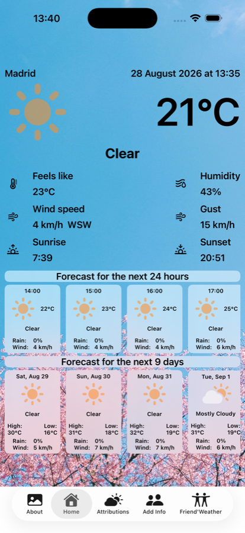
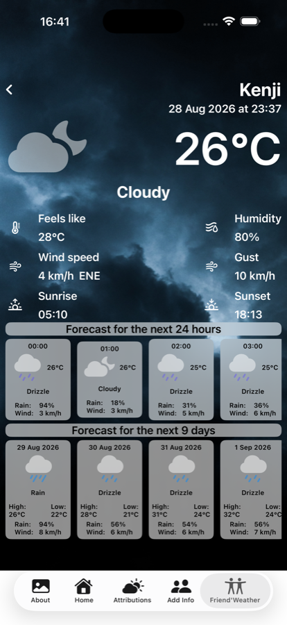

On the App Store, and in the browser
Pacheco
The weather where you are, and the weather where the people you care about are — each on their own clock. Built twice: a native iPhone app, and a web version for any browser, kept in step even where the two platforms disagree underneath.



Llegó Pacheco
In Venezuela, "Llegó Pacheco" — "Pacheco has arrived" — means the cold has come. The phrase remembers Antonio Pacheco, a flower farmer who came down from Galipán, on the El Ávila hill, to sell flowers in Caracas at the end of each November. His arrival lined up with the start of the cold season, and the name stuck to the season itself. The app is named after the phrase, not the farmer.
Two platforms, one set of numbers
SwiftUI and Angular can't share a runtime, so the two versions can't share code for the things that make the app feel like itself: the rain and snow that fall over a photograph, the wind that slowly pans it, the gradient that keeps the text readable on top. What they share instead is the numbers — the same particle counts, the same scrim strength — changed in both places at once or not at all. It's a discipline rather than a compiler guarantee, and it has held.
Most of the app is in step this way. What isn't yet: fourteen of the photographs date from an earlier pass and are lower-resolution than the rest — visible if you look closely, not at a glance. They're on the list.
What's different underneath
The iPhone app gets its forecasts from Apple's WeatherKit, which authenticates through the developer account itself. A website made of static files has no such account to hide behind, so the web version asks Open-Meteo instead, which needs no key at all. Why that one constraint shapes the whole web build — and why the two versions can occasionally disagree about tomorrow — is the subject of Pacheco is now on the web.
Under the hood
iPhone. SwiftUI, Swift 6, iOS 17.2 and later. WeatherKit for forecasts, SwiftData for saved friends, MapKit for place search. 45 tests.
Web. Angular 22 and TypeScript. Installable, and it keeps working offline — the app, both languages and every photograph you've already seen. Open-Meteo for forecasts. 190 tests.
The two are within two lines of each other in size: about 4,300 lines apiece.
Get it
Pacheco on the
App Store — free, for iPhone, iOS 17.2 or later.
Pacheco in the browser — any device, nothing to
install.
En el App Store, y en el navegador
Pacheco
El clima donde estás, y el clima donde está la gente que te importa, cada uno con su reloj. Construida dos veces: una app nativa para iPhone y una versión web para cualquier navegador, mantenidas a la par incluso donde las dos plataformas difieren por dentro.
Llegó Pacheco
En Venezuela, «Llegó Pacheco» quiere decir que llegó el frío. La expresión recuerda a Antonio Pacheco, un cultivador de flores que bajaba de Galipán, en el cerro El Ávila, a vender flores en Caracas a finales de cada noviembre. Su llegada coincidía con el inicio de la temporada fría, y el nombre se quedó pegado a la temporada. La app lleva el nombre de la expresión, no del florista.
Dos plataformas, un solo juego de números
SwiftUI y Angular no pueden compartir un runtime, así que las dos versiones no pueden compartir el código de lo que hace que la app se sienta como ella misma: la lluvia y la nieve que caen sobre una fotografía, el viento que la desplaza despacio, el degradado que mantiene el texto legible encima. Lo que comparten son los números: la misma cantidad de partículas, la misma intensidad del degradado, cambiados en los dos sitios a la vez o en ninguno. Es una disciplina, no una garantía del compilador, y ha aguantado.
La mayor parte de la app va así, a la par. Lo que todavía no: catorce de las fotografías vienen de una tanda anterior y tienen menos resolución que el resto. Se nota si miras de cerca, no a simple vista. Están en la lista.
Qué cambia por dentro
La app de iPhone obtiene los pronósticos de WeatherKit de Apple, que se autentica a través de la propia cuenta de desarrollador. Una web hecha de archivos estáticos no tiene una cuenta así detrás de la que esconderse, de modo que la versión web le pregunta a Open-Meteo, que no necesita clave alguna. Por qué esa única restricción da forma a toda la versión web, y por qué las dos versiones pueden discrepar de vez en cuando sobre el tiempo de mañana, es el tema de Pacheco ya está en la web.
Por dentro
iPhone. SwiftUI, Swift 6, iOS 17.2 o posterior. WeatherKit para los pronósticos, SwiftData para los amigos guardados, MapKit para buscar lugares. 45 tests.
Web. Angular 22 y TypeScript. Se puede instalar, y sigue funcionando sin conexión: la app, los dos idiomas y todas las fotografías que ya hayas visto. Open-Meteo para los pronósticos. 190 tests.
Las dos versiones se llevan dos líneas de tamaño: unas 4.300 líneas cada una.
Consíguela
Pacheco en el
App Store — gratis, para iPhone, iOS 17.2 o posterior.
Pacheco en el navegador — en cualquier dispositivo,
sin instalar nada.
Para la ficha del App Store: Soporte · Privacidad